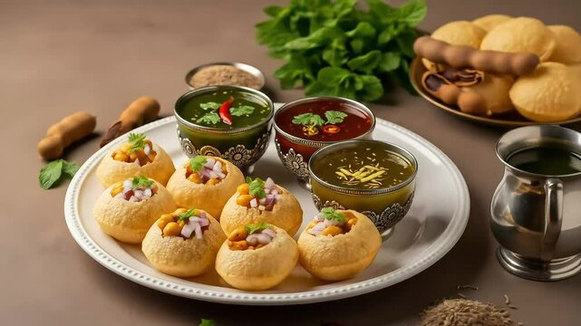

"Pop, Crunch, Splash, Gone!", "Your Daily Dose of Delight," "The Perfect Pop of Flavor," or catchy phrases such as "Once You Pop, You Can't Stop!" and "Pani Puri: An Emotion, Not Just a Snack!"
Pani puri is a beloved Indian snack consisting of hollow, crispy puris filled with spiced water, potatoes, chickpeas, and tangy chutneys. Perfect for street food lovers!The "sweet" element of Panipuri, known as Meetha Pani (sweet water), is the crucial counterpart to the fiery spicy water, offering a soothing and tangy balance that elevates the entire dish. This rich, dark brown chutney is typically made by simmering tamarind (imli) and dates (khajur) with jaggery (gud), resulting in a thick, velvety consistency. The natural sweetness of the dates and jaggery counters the heat of the green chili water, while the tamarind adds a deep, sour tang. For those with a lower spice tolerance or a sweet tooth, vendors often prepare a "Meetha Golgappa" where this chutney takes center stage, sometimes garnished with a sprinkle of roasted cumin powder and rock salt to enhance the flavor profile.
